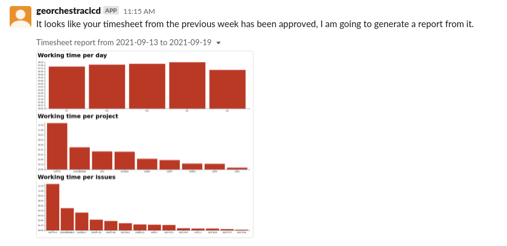
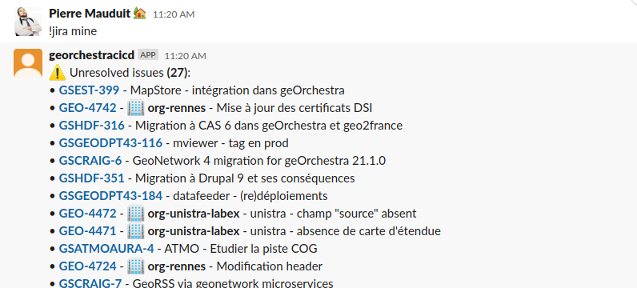
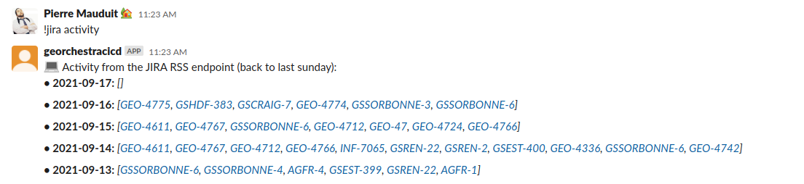
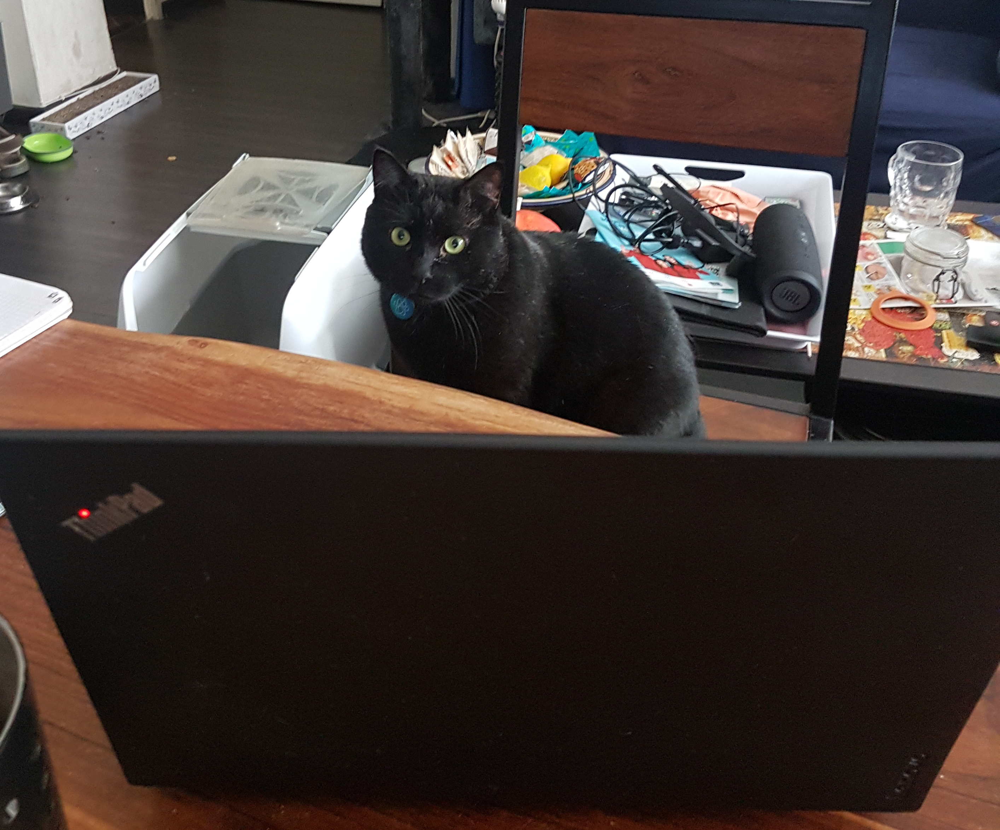

"Parle à mon bot"
Organizing my work at Camptocamp with a Slack bot
Are you able to name every tools / online services we use on a day-to-day basis @ work ?
A few ones:
- JIRA
- Confluence
- Github
- docker-hub
- Odoo
- Google Workspace (mail, calendar, drive ...)
- Amazon AWS (or any other cloud provider)
Wait ... I forgot a one ...
Hint:

Slack !
Some of us formerly were using (or are still using):
- IRC (boring: no emojis, no images)
- Gtalk (not really suited for chat rooms)
- Hipchat (dead now)
Common point between the previously mentioned services ?
They all have an API !
- Odoo has this JSON-RPC endpoint
- Github: REST & GraphQL
- JIRA (+ plugins) & Confluence have some hidden APIs, RSS endpoints
- And Slack obviously has a one
So what ? ¯\_(ツ)_/¯
Why not bridging all these services together ?
pmauduit/slack-bot
My pet project for an imaginary companion at work
More precisely: A slack bot which warns me about some events from:
- JIRA & Confluence
- Github
- AWS
... with which I can also interact, to:
- Fill in my timesheet
- Look for resources on Jira, Confluence, Github
- List opened Pull-Requests on some repositories
- Give me my current working time for the day, week ...
pmauduit/slack-bot
More into the technical details:
- a PoC that went really too far
- Coded in Groovy
- uses the Java
com.ullink.slack:simpleslackapilibrary - Tends to avoid external client libraries (KISS)
- ~ 60% code coverage
Now, let's see some screenshots
Events coming from Jira ("search issues" endpoint)

Events coming from Jira (RSS feeds)

Events coming from Tempo: timesheet approved
Events coming from Confluence

Events coming from Github

Events coming from S3

Querying JIRA
No need to visit JIRA anymore ! Well, almost ...
Getting my JIRA activity over the last week
Next step: fill in directly into Tempo
Querying Github


Checking presence of a colleague with Odoo
(attendance_state field on res.users)

Note: only works with people from the same company, does not work with my account on swiss & german colleagues ?! Since we are no longer required to signin/signout on Odoo anyway ...
Filling my timesheet
outside of Tempo !

Note: the Tempo UI being not that bad actually, I prefer to use the official one ... I still use this feature from time to time though.
Working time from Odoo, "in realtime"

Probably the command I use the most to track my worklog, I can also ask for the summary on the current week.
Getting a worklog from JIRA

Just to spy on the others' TS ... Or to give a rough idea on where we are on a specific issue.
Visiting websites (1/2)

Because I am too lazy to open a new tab in my browser ?
Visiting websites (2/2)

This command is triggered every monday morning at 10:15, and the result is dumped onto the gs-georchestra slack channel.
What's next ?
- A command to pre-fill my timesheet on Tempo, based on the analyzed activity
- A daily summary based on the coming events on GoogleCalendar, every 9:00 AM
- A preliminary analyze of my JIRA issues ?
What I learned so far
- Finding documentation on JIRA & Confluence is abominable
- Compared to the other ones, JIRA has the less coherent API
- GraphQL-based APIs are puzzling, but the underlying concepts are interesting
- More documentation on how to query the Odoo JSON/RPC endpoint would be appreciated
- Sometimes, you don't need a dedicated lib to interact with an API
Conclusions
- I was first trying to escape from Jira, I learned to use it more efficiently
- We should take the time to deeply discover all these tools, before using them (this project changed my way of using JIRA)
- I was not aware of the amount of data we were creating at work (35k issues on JIRA-C2C !)
- People from the other dept. are also doing interesting stuff
- Camptocamp lacks guidelines at some point (what about an "administrator guide" for the github admins ?)
- Next year, my bot will work for me, and I won't tell you about it.
Thanks for you attention !
Questions ?
